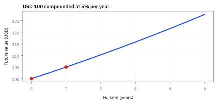
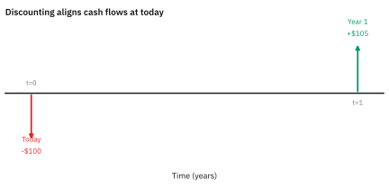
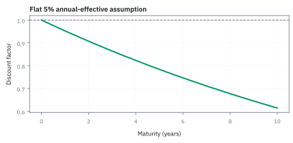

18.1 The Time Value of Money
เงินคนละวันเทียบกันตรง ๆ ไม่ได้ ต้องย้ายมาอยู่วันเดียวกันก่อนด้วยอัตราดอกเบี้ย และคำตอบว่าอะไรคุ้มกว่าเปลี่ยนตามอัตรานั้น
บริษัทให้พนักงานที่เกษียณเลือกหนึ่งในสามทาง: (A) รับเงินสด \$1,000,000 วันนี้ (B) รับ \$120,000 ทุกสิ้นปีเป็นเวลา 12 ปี (C) รับ \$45,000 สิ้นปีแรก แล้วเพิ่มขึ้นปีละ 1% ไปตลอดกาล หลายคนตอบทันทีว่า B เพราะรวมได้ \$1,440,000 หรือไม่ก็ C เพราะจ่ายไม่มีวันหมด ถ้าเงินฝากที่ปลอดความเสี่ยงให้ 5% ต่อปี ควรเลือกทางไหน และถ้าให้ 8% ล่ะ?
ลองตอบก่อนเปิดเฉลย
ที่ 5% C มีค่าวันนี้ \$1,125,000 สูงสุด B \$1,063,590.20 และ A \$1,000,000 ที่ 8% กลับกันหมด A ชนะที่ \$1,000,000 ส่วน B เหลือ \$904,329.36 และ C เหลือ \$642,857.14 การบวกเงินของ B ตรง ๆ ได้ \$1,440,000 ก็จริง แต่ไม่มีวันไหนที่เงินทั้งก้อนอยู่ในมือพร้อมกัน ส่วน C ที่จ่ายตลอดกาลก็มีค่าจำกัด เพราะเงินที่ยิ่งไกลยิ่งมีค่าวันนี้น้อย
สิ่งที่เราจะสร้าง
ทุกราคาในบทต่อจากนี้เริ่มจากคำถามเดียว: เงินที่จะได้ในวันหนึ่งข้างหน้ามีค่าเท่าไรวันนี้ สูตร Black–Scholes ใน 14.2 คูณ strike ด้วย $e^{-rT}$ ต้นไม้ใน 18.3 หารด้วย $1+r$ ทุกกิ่ง และราคาพันธบัตรใน 18.2 คือผลบวกของเงินหลายก้อนที่ถูกย้ายมาวันนี้ หน้านี้สร้างเครื่องมือนั้นจากศูนย์
เราเริ่มจากฝากเงินสองปีด้วยมือเพื่อเห็นดอกเบี้ยของดอกเบี้ย เดินกลับทิศเป็น discount factor รวมเงินหลายก้อน สร้างสูตร annuity และ perpetuity จากอนุกรมเรขาคณิต ตอบโจทย์ A B C ที่ 5% และ 8% หาอัตราที่อันดับพลิก แล้วซอยงวดทบต้นจนได้ $e^{rT}$ และดูว่าคอมพิวเตอร์พังตรงไหนเมื่อซอยถี่เกินไป
ศัพท์ที่ใช้ในหัวข้อนี้
- Present value (PV) และ future value (FV)
- PV คือมูลค่าวันนี้ของเงินที่จะได้ในอนาคต FV คือยอดที่เงินวันนี้จะโตไปถึงในวันหนึ่ง ทั้งสองมีไว้ย้ายเงินข้ามเวลา เพื่อให้เงินคนละวันเทียบกันได้
- Discount factor
- ตัวคูณที่เปลี่ยนเงิน \$1 ในวันที่ $T$ ให้เป็นเงินวันนี้ ถ้าดอกเบี้ยเป็นบวกจะน้อยกว่า 1 เสมอ อ่านได้อีกแบบว่าเป็นราคาวันนี้ของสัญญาที่จ่าย \$1 ในวันที่ $T$
- Compounding และ continuous compounding
- ดอกเบี้ยทบต้นคือดอกเบี้ยงวดก่อนไปงอกดอกเบี้ยในงวดถัดไป ถ้าซอยงวดถี่ขึ้นไม่สิ้นสุดเรียกว่าทบต้นต่อเนื่อง ได้ตัวคูณ $e^{rT}$ ที่แบบจำลองเวลาต่อเนื่องทั้งเล่มใช้
- Annuity และ perpetuity
- annuity คือเงินงวดเท่ากันจำนวนงวดจำกัด เช่นผ่อนบ้านหรือคูปองพันธบัตร perpetuity คือเงินงวดที่จ่ายไม่มีวันจบ ทั้งสองมีสูตรปิดจากอนุกรมเรขาคณิต จึงไม่ต้องบวกทีละงวด
- NPV และ IRR
- NPV (net present value) คือผลรวม PV ของเงินเข้าลบเงินออก ถ้าเป็นบวกแปลว่าคุ้ม IRR (internal rate of return) คืออัตราที่ทำให้ NPV เป็นศูนย์ ใช้สรุปโครงการเป็นตัวเลขเดียว แต่หลอกได้ง่าย
- Effective annual rate (EAR)
- ผลตอบแทนต่อปีจริงหลังรวมผลของการทบต้นระหว่างปีแล้ว ใช้เทียบอัตราที่ประกาศด้วยความถี่ทบต้นต่างกัน
สัญลักษณ์และหน่วย
| สัญลักษณ์ | ความหมาย | หน่วย |
|---|---|---|
| $PV,\ FV$ | มูลค่าวันนี้ และยอดในวันที่ $T$ | \$ |
| $r$ | อัตราดอกเบี้ยหรืออัตราคิดลดต่องวด (ปกติต่อปี) | ต่องวด |
| $T,\ n,\ k$ | ระยะเวลา จำนวนงวด และเลขงวด | ปี, งวด |
| $D(0,T)$ | discount factor จากวันที่ $T$ มาวันนี้ | ไม่มีหน่วย |
| $c,\ c_k,\ g$ | เงินต่องวด เงินงวดที่ $k$ และอัตราโตของเงินงวด | \$, \$, ต่องวด |
| $v$ | ตัวคูณคิดลดหนึ่งงวด $1/(1+r)$ | ไม่มีหน่วย |
| $m,\ r_c$ | จำนวนครั้งที่ทบต้นต่อปี และอัตราทบต้นต่อเนื่อง | ครั้งต่อปี, ต่อปี |
ขั้นที่ 1 — ฝาก \$100 สองปีด้วยมือ แล้วดูว่าดอกเบี้ยของดอกเบี้ยอยู่ตรงไหน
ก่อนมีสูตร ลองฝาก \$100 ที่ 5% ต่อปี คิดดอกเบี้ยปีละครั้ง ถ้าคิดแบบไม่ทบต้นจะได้ปีละ \$5 เท่ากันและจบที่ \$110 แต่ธนาคารคิดดอกเบี้ยจากยอดที่อยู่ในบัญชีตอนนั้น ทำทีละปีแล้วเขียนสิ่งที่ทำซ้ำเป็นสูตร
ปีที่สองดอกเบี้ย 5% คิดจากยอด 105 ทั้งก้อน ไม่ใช่จากเงินต้น 100 ส่วนเกิน \$0.25 คือดอกเบี้ย \$5 ของปีแรกที่ไปงอกดอกเบี้ยอีก 5% นี่คือดอกเบี้ยทบต้น
ทุกปีทำเหมือนกัน คือคูณยอดทั้งก้อนด้วย $1+r$ ผ่านไป $T$ ปีจึงคูณ $T$ ครั้ง เขียนรวบเป็นกำลัง $T$ สามปีได้ \$115.76 ส่วนที่เกิน \$115 ของแบบไม่ทบต้นคือดอกเบี้ยของดอกเบี้ยสามปีรวมกัน
Figure 18.1a — เงิน \$100 ที่โตด้วย 5% ต่อปี

เส้นคือ $100(1.05)^t$ ที่ $t$ ตั้งแต่ 0 ถึง 5 ปี (101 จุด) จุดแดงสองจุดคือ \$100 วันนี้และ \$105 ในหนึ่งปี เส้นโค้งขึ้นเล็กน้อยเพราะดอกเบี้ยของดอกเบี้ย ที่ 5 ปีได้ \$127.63 ขณะที่แบบไม่ทบต้นได้ \$125 เป็นตัวอย่างสมมติ ไม่ใช่การพยากรณ์อัตราดอกเบี้ย
ขั้นที่ 2 — เดินกลับทิศ: discount factor
คำถามในตลาดมักเป็นทิศกลับ คู่สัญญาเสนอจะจ่าย \$105 ในอีกหนึ่งปี วันนี้เราควรจ่ายเท่าไรเพื่อซื้อสัญญานั้น แก้สมการของขั้นที่ 1 หา $PV$ แล้วตั้งชื่อตัวคูณที่ได้
$D(0,T)$ คือราคาวันนี้ของเงิน \$1 ที่จะได้ในวันที่ $T$ ยิ่งรอนานยิ่งถูก เพราะเงินวันนี้เอาไปฝากให้โตได้ \$105 ในหนึ่งปีจึงมีค่า \$100 พอดี
ทำไมต้องเป็น \$100 พอดี? ถ้าสัญญาจ่ายแค่ \$103 เราฝากเงิน \$100 เองได้ \$105 ดีกว่า จึงไม่ควรจ่ายถึง \$100 (ค่าที่ยุติธรรมคือ $103/1.05=98.10$) ถ้าจ่าย \$107 ก็ควรซื้อสัญญานั้นแทนการฝาก ราคาที่ไม่มีใครได้เปรียบจึงเป็น $FV\cdot D(0,T)$
Figure 18.1b — ย้ายเงินทั้งสองก้อนมาวันเดียวกัน

แผนภาพสอน ไม่มีข้อมูล แท่งซ้าย (Today) คือเงินออก \$100 วันนี้ แท่งขวา (Year 1) คือเงินเข้า \$105 ในหนึ่งปี หัวรูปเขียนว่าการคิดลดทำให้เงินสองก้อนเทียบกันได้ที่วันนี้: $105\,D(0,1)=100$ หักล้างกับเงินออกพอดี ลูกศรเป็นการเทียบมูลค่า ไม่ใช่เงินที่เคลื่อนจริง
Figure 18.1c — discount factor ลดลงตามเวลาที่รอ

เส้นคือ $1/1.05^t$ ที่ $t$ ตั้งแต่ 0 ถึง 10 ปี (201 จุด) เส้นประคือระดับ 1 ของเงินวันนี้ ที่ 10 ปี \$1 มีค่าวันนี้ \$0.6139 รูปนี้สมมติอัตราเดียว 5% ทุกอายุ ของจริงอัตราต่างกันตามอายุ ซึ่งเป็นเรื่องของ 18.2 และ 20.1
ขั้นที่ 3 — เงินหลายก้อน: ย้ายทีละก้อนแล้วค่อยบวก
เงินที่มาหลายวันใช้ discount factor คนละตัว เพราะแต่ละก้อนรอไม่เท่ากัน แต่พอย้ายมาวันนี้หมดแล้วก็บวกกันได้ เพราะอยู่วันเดียวกันแล้ว ตัวอย่างสมมติ: พันธบัตรจ่ายคูปอง \$4 ปลายปีที่ 1 และ \$104 (คูปองกับเงินต้น) ปลายปีที่ 2 อัตราตลาด 5%
เงินสดรวม \$108 แต่มีค่าวันนี้ \$98.14 ต่ำกว่าเงินต้น \$100 เพราะคูปอง 4% ต่ำกว่าอัตรา 5% ที่เงินหาได้เองในตลาด ผู้ซื้อจึงยอมจ่ายต่ำกว่า 100 เพื่อชดเชย 18.2 จะใช้ผลบวกแบบนี้เป็นราคาพันธบัตรทุกตัว
ขั้นที่ 4 — ไฟล์ Excel ของคอร์ส: ห้างวดรายเดือนที่ไม่เท่ากัน
โจทย์ให้อะไรมาบ้าง: เงินรับปลายเดือนที่ 1 ถึง 5 คือ 55.34, 55.34, 63.46, 32.47 และ \$110.19 อัตรา 4.5% ต่อปีคิดลดรายเดือน อัตราต่องวดจึงเป็น $0.045/12=0.00375$
คำตอบ: \$312.95 (ค่าเต็มคือ 312.9464) ใน Excel ได้สองทาง ทางแรกพิมพ์ =NPV(C6, C2:G2) เมื่อช่อง C6 คืออัตรารายเดือน ทางที่สองคิดทีละช่องเป็น =C2/((1+C6)^C1) ตรึงช่อง C6 ไว้แล้วบวกห้าช่อง ฟังก์ชัน PV ใช้ไม่ได้เพราะรับเงินงวดได้ค่าเดียว และ NPV ของ Excel ถือว่าช่องแรกเกิดปลายงวดแรก ถ้ามีเงินเข้าออกวันนี้ต้องบวกนอกสูตรเอง
ตรวจเองใน 10 วินาที: เงินไม่คิดลดรวม \$316.80 ต่างจาก PV \$3.85 หรือราว 1.2% เงินก้อนใหญ่อยู่ท้าย เวลารอเฉลี่ยถ่วงด้วยเงินคือ 3.27 เดือน คูณ 0.375% ต่อเดือนได้ราว 1.2% ตรงกัน
ขั้นที่ 5 — เงินงวดเท่ากัน: annuity และ perpetuity จากอนุกรมเรขาคณิต
ทางเลือก B จ่าย 12 งวดเท่ากัน ถ้าบวกทีละงวดก็ได้ แต่ทุกพจน์คือพจน์ก่อนคูณ $v=1/(1+r)$ เป็นอนุกรมเรขาคณิต จึงหาผลบวกปิดได้ด้วยกลคูณแล้วลบ
ตอนลบ พจน์กลางทุกตัวหักล้างกันหมด เหลือแค่หัว $v$ กับท้าย $v^{n+1}$ นี่คือกลที่ทำให้ 12 พจน์หรือ 360 พจน์ของเงินกู้บ้านคิดได้ในบรรทัดเดียว
ถ้าจ่ายไม่มีวันจบ $v^n$ เข้าใกล้ศูนย์เพราะ $0\lt v\lt 1$ สูตรจึงเหลือ $c/r$ ตรวจด้วยเหตุผลได้: ฝากเงิน $c/r$ ไว้ ดอกเบี้ยปีละ $r\cdot c/r=c$ พอดี จ่ายได้ทุกปีโดยเงินต้นไม่ลด
อีกทางที่ได้สูตรเดียวกัน: annuity $n$ งวดคือ perpetuity ที่เริ่มวันนี้ ลบ perpetuity แบบเดียวกันที่เริ่มหลังงวดที่ $n$ ตัวหลังมีค่าวันนี้ $(1+r)^{-n}\,c/r$ ผลต่างจึงเป็น $\frac cr\big(1-(1+r)^{-n}\big)$ ตรงกับแถวที่หก
ขั้นที่ 6 — เงินงวดที่โตทุกปี: ทำไมต้อง $g\lt r$
ทางเลือก C จ่าย $c$ ปลายปีแรก แล้วโตปีละ $g$ งวดที่ $k$ จึงเป็น $c(1+g)^{k-1}$ ดึง $c/(1+r)$ ออกมานอกผลบวก สิ่งที่เหลือเป็นอนุกรมเรขาคณิตอัตราส่วน $q$
ผลบวก $1+q+q^2+\dots$ เท่ากับ $1/(1-q)$ ก็ต่อเมื่อ $q\lt 1$ คือเงินงวดโตช้ากว่าอัตราคิดลด ($g\lt r$) ถ้า $g\ge r$ งวดไกล ๆ ไม่เล็กลงเลย ผลบวกเป็นอนันต์ และการฝืนแทนสูตรจะได้ตัวเลขติดลบที่ไม่มีความหมาย
ขั้นที่ 7 — ทางเลือก A, B, C ที่อัตรา 5%
โจทย์ให้อะไรมาบ้าง: A คือ \$1,000,000 วันนี้ B คือ \$120,000 สิ้นปีที่ 1 ถึง 12 C คือ \$45,000 สิ้นปีแรกแล้วโต 1% ต่อปีตลอดกาล อัตราคิดลด $r=0.05$
คำตอบ: ที่ 5% อันดับคือ $C\gt B\gt A$ ทางเลือก C ชนะแม้งวดแรกเล็กกว่า B เกือบสามเท่า เพราะจ่ายไปเรื่อย ๆ และโตทุกปี
ตรวจเองใน 10 วินาที: เงินของ B ไม่คิดลดรวม $12(120{,}000)=\$1{,}440{,}000$ การคิดลดตัดออกไป \$376,409.80 หรือ 26% สมเหตุผล เพราะเงินงวดกลางรอราว 6 ปี และ $1.05^{-6}=0.746$
ขั้นที่ 8 — อัตราขึ้นเป็น 8%: ใครเจ็บมากที่สุดและเพราะอะไร
แทน $r=0.08$ ในสูตรเดิม แล้วถามต่อว่าทำไม C ร่วงแรงกว่า B มาก คำตอบอยู่ที่ว่ามูลค่าของ C อยู่ไกลแค่ไหน วิธีวัดคือคิดว่า 12 ปีแรกของ C มีค่าเท่าไร: เงินงวดตั้งแต่ปีที่ 13 คือกระแสเดิมที่โตไปแล้ว $(1+g)^{12}$ และเลื่อนไป 12 ปี มูลค่าจึงเป็น $q^{12}$ เท่าของทั้งก้อน
A ไม่ขยับเลยเพราะเป็นเงินวันนี้ B เสีย 15.0% C เสีย 42.9% ที่ 5% มูลค่าของ C มาจาก 12 ปีแรกแค่ 37.3% อีก 62.7% อยู่หลังปีที่ 12 ซึ่งเป็นเงินที่ถูกคิดลดหลายสิบปี อัตราที่ขึ้นเล็กน้อยจึงกัดส่วนนั้นหนัก
18.2 จะวัดความไวนี้ด้วยตัวเลขเดียวชื่อ duration ซึ่งคือเวลารอเฉลี่ยของเงินถ่วงด้วย PV ของ B ได้ราว 5.9 ปี ของ C ได้ 26.25 ปี (โจทย์ข้อ 3 ของ 18.2 คิดให้ดูทีละบรรทัด)
Figure 18.1d — อัตราสูงทำให้มูลค่าวันนี้ต่ำ

แกนนอนคืออัตราต่อปี 0% ถึง 12% (121 จุด) แกนตั้งคือ $105/(1+r)$ มูลค่าวันนี้ของ \$105 ที่ได้ในหนึ่งปี จาก \$105 ที่ 0% ลงถึง \$93.75 ที่ 12% จุดแดงคือ \$100 ที่ 5% เงินที่รอแค่หนึ่งปีเสียมูลค่าเพียง 2.8% เมื่ออัตราขึ้นจาก 5% เป็น 8% เทียบกับ B ที่เสีย 15.0% และ C ที่เสีย 42.9%
ขั้นที่ 9 — อันดับพลิกที่อัตราไหน
ถ้าคำตอบเปลี่ยนตามอัตรา สิ่งที่ควรรู้คืออัตราที่อันดับพลิก จุดที่ C เท่ากับ A แก้สมการตรง ๆ ได้ ส่วนจุดที่ B เท่ากับคนอื่นต้องหาเป็นตัวเลข เพราะ annuity 12 งวดเป็นพหุนามกำลัง 12 ของ $v$ ไม่มีสูตรปิด เราใช้การแบ่งครึ่งช่วง (bisection) ในโค้ดท้ายหน้า
อันดับจึงเป็น $C\gt B\gt A$ เมื่ออัตราต่ำกว่า 5.30% เป็น $B\gt C\gt A$ ระหว่าง 5.30% ถึง 5.50% เป็น $B\gt A\gt C$ ระหว่าง 5.50% ถึง 6.11% และเป็น $A\gt B\gt C$ เมื่อเกิน 6.11%
ระหว่าง 5% กับ 8% อันดับพลิกสามครั้ง คำถาม “ทางไหนดีกว่า” จึงไม่มีคำตอบถ้าไม่บอกอัตรา ตรวจจุด $B=A$ ได้ด้วยการแทนค่า: ที่ 6% B ได้ \$1,006,061.27 มากกว่า A ที่ 6.2% ได้ \$995,121.25 น้อยกว่า A จุดตัดจึงอยู่ระหว่างสองค่านี้
6.1104% คือ IRR ของการสละ A เพื่อรับ B ถ้าเงินเราหาผลตอบแทนแบบเดียวกันได้ต่ำกว่านี้ B คุ้มกว่า ถ้าสูงกว่า A คุ้มกว่า
ขั้นที่ 10 — ซอยงวดทบต้นจนต่อเนื่อง: ที่มาของ $e^{rT}$
ธนาคารอาจประกาศ 5% ต่อปีแต่ทบต้นทุกเดือน ($m=12$) หรือทุกวัน ทบ $m$ ครั้งต่อปีคือได้ $r/m$ ต่องวด $mT$ งวด ถ้าให้ $m$ โตไม่สิ้นสุด ตั้ง $u=m/r$ แล้วรูปจะกลายเป็นนิยามของ $e$ อีกทางคือเขียนเป็นสมการเชิงอนุพันธ์: ในช่วงเวลาสั้น $dt$ เงิน $M$ งอกดอกเบี้ย $rM\,dt$
กลอยู่ที่แถวที่สาม: ยกกำลัง $mT$ แยกได้เป็น $u$ คูณ $rT$ วงเล็บใน $[\ ]$ คือ $(1+1/u)^u$ ซึ่งเข้าใกล้ $e\approx2.71828$ เมื่อ $u$ โต ทั้งสองทางได้คำตอบเดียวกัน
นี่คือเหตุที่แบบจำลองเวลาต่อเนื่องทั้งเล่ม ตั้งแต่ GBM ใน 10.1 จนถึง Black–Scholes ใน 14.2 คิดลดด้วย $e^{-rT}$
ขั้นที่ 11 — \$1,000,000 ในอีก 12 ปี ที่ “5%” หกแบบ
โจทย์ให้อะไรมาบ้าง: เงิน \$1,000,000 ที่จะได้ในอีก 12 ปี อัตราประกาศ 5% ต่อปี ทบต้นปีละ $m$ ครั้ง และแบบต่อเนื่อง จากนั้นหาอัตราต่อเนื่องที่ให้ผลเท่า 5% รายปีพอดี
คำตอบ: มูลค่าวันนี้คือ \$556,837.42, \$552,875.35, \$550,856.49, \$549,496.18, \$548,834.19 และ \$548,811.64 รายปีกับต่อเนื่องต่างกัน \$8,025.78 ทั้งที่ “อัตรา” เท่ากัน EAR ของรายเดือนคือ 5.1162% ของต่อเนื่องคือ 5.1271% ถ้าอยากได้ผลเท่ารายปี 5% ต้องใช้อัตราต่อเนื่อง 4.8790% ซึ่งให้ PV ของ B เท่าเดิม \$1,063,590.20 ทุกหลัก
ตรวจเองใน 10 วินาที: ทบต้นถี่ขึ้น เงินโตเร็วขึ้น มูลค่าวันนี้จึงต้องลดลงทุกแถว และแถว $m=365$ ต้องใกล้แถวต่อเนื่องมาก ทั้งสองอย่างเป็นจริง
ขั้นที่ 12 — ลองวนในคอมพิวเตอร์: เข้าใกล้ $e$ จากด้านล่าง แล้วพังเมื่อ $n$ ใหญ่เกิน
เอกสารของคอร์สวน $n$ เป็น 1, 2, 4, 52, 365, 8,760 แล้วคูณสองไปเรื่อย ๆ จนถึง 71,761,920 (8,760 คูณ $2^{13}$) พิมพ์ $(1+1/n)^n$ ทุกแถวต่ำกว่า $e$ และเหตุผลพิสูจน์ได้ในสามบรรทัด จากนั้นลองให้ $n$ ใหญ่ขึ้นอีก
$h$ เริ่มที่ศูนย์และเพิ่มตลอดเมื่อ $x\gt 0$ จึงได้ $\ln(1+x)\lt x$ แทน $x=1/n$ แล้วคูณ $n$ ได้ว่า $\ln$ ของ $(1+1/n)^n$ ต่ำกว่า 1 ค่าจึงต่ำกว่า $e$ ทุก $n$ ที่ $n=1$ ได้แค่ 2 เพราะทบปีละครั้งไม่มีดอกเบี้ยของดอกเบี้ยระหว่างปีเลย
โค้ดเดียวกันพิมพ์อีกสองคอลัมน์ของเงิน \$1 ที่ 5% หนึ่งปี: ทบ $n$ ครั้งได้ 1.051267 ที่ $n=365$ และ $\big[(1+\frac1n)^n\big]^{0.05}$ ซึ่งใช้ค่าประมาณของ $e$ แทน ที่ $n=1$ จึงได้ $2^{0.05}=1.035265$ ต่ำกว่า $e^{0.05}=1.051271$ มาก รายวันกับต่อเนื่องต่างกันแค่ \$0.00036 ต่อ \$100
สามแถวท้ายผิดเพราะเลข double เก็บเศษหลังจุดได้ 52 หลักฐานสอง ช่องห่างที่เล็กที่สุดถัดจาก 1 คือ $2^{-52}=2.22\times10^{-16}$ ค่า $1+10^{-15}$ ถูกปัดเป็น $1+1.110223\times10^{-15}$ ผลจึงเป็น $e^{1.110223}=3.035$ และ $10^{-16}$ เล็กกว่าครึ่งช่องจึงถูกปัดทิ้ง เหลือ $1^n=1$ บทเรียน: สูตรถูกไม่ได้แปลว่าคำนวณออกมาถูก
คำถามที่ควรถามออกมาดัง ๆ
5% มาจากไหน? อัตราคิดลดคือผลตอบแทนของทางเลือกที่ดีที่สุดถัดไปซึ่งเสี่ยงเท่ากัน ถ้าเงินงวดแน่นอนเหมือนพันธบัตรรัฐบาล ใช้อัตราพันธบัตรรัฐบาลอายุเดียวกัน (18.2, 20.1) ถ้าเงินงวดอาจไม่ได้ ต้องบวกส่วนชดเชยความเสี่ยงเข้าไป ขั้นที่ 9 บอกว่าอัตราที่ต่างกันครึ่งจุดก็เปลี่ยนคำตอบได้
ถ้าดอกเบี้ยกู้กับดอกเบี้ยฝากไม่เท่ากันล่ะ? ราคาจะไม่ใช่ค่าเดียวแต่เป็นช่วง สมมติฝากได้ 5% กู้ได้ 7% สัญญาจ่าย \$105 ในหนึ่งปี ถ้าขายอยู่ต่ำกว่า $105/1.07=\$98.13$ ให้ซื้อสัญญาแล้วกู้ \$98.13 วันนี้ ปีหน้าใช้เงิน \$105 ของสัญญาคืนหนี้พอดี ได้ส่วนต่างฟรี ถ้าขายอยู่สูงกว่า $105/1.05=\$100$ ให้ขายสัญญาแล้วฝาก \$100 ไว้จ่าย ราคาที่ไม่มีใครได้ฟรีจึงอยู่ระหว่าง \$98.13 ถึง \$100
เงินที่จ่ายตลอดกาลมีค่าจำกัดได้อย่างไร? เพราะงวดไกล ๆ มีค่าวันนี้เล็กลงแบบเรขาคณิต งวดที่ 100 ของ C คือ $45{,}000(1.01)^{99}=\$120{,}511.51$ แต่มีค่าวันนี้แค่ \$916.43 ที่ 5% ผลบวกของพจน์ที่หดเร็วพอจึงเป็นเลขจำกัด
ทำไมไม่เลือกด้วย IRR ไปเลย? IRR บอกอัตราที่ NPV เป็นศูนย์ แต่ไม่บอกว่าได้เงินเท่าไร บางโครงการมี IRR สองค่า และโครงการที่ไม่มีเงินออกเลยอย่าง C ไม่มี IRR ให้หา การเลือกด้วย NPV ที่อัตราที่ใช้จริงจึงตรงกว่า
ความผิดที่ให้คำตอบผิดแบบเงียบ ๆ
บวกเงินคนละวันตรง ๆ: B ดูเหมือนมีค่า \$1,440,000 แต่ที่ 5% มีค่าวันนี้ \$1,063,590.20 ความต่าง \$376,409.80 คือราคาของการรอ
เลือกด้วย IRR เมื่อเงินสดสลับเครื่องหมายหลายครั้ง: กระแส $(-100,\ +230,\ -132)$ ให้สมการ $132x^2-230x+100=0$ เมื่อ $x=1/(1+r)$ ได้ $x=(230\pm10)/264$ คือ IRR ทั้ง 10% และ 20% NPV เป็นบวกเฉพาะอัตราระหว่างนั้น (ที่ 15% ได้ +0.19 ที่ 5% ได้ −0.68) ตัวเลข IRR ตัวเดียวจึงบอกไม่ได้ว่าโครงการดีไหม
ลืมดูว่าจ่ายต้นงวดหรือปลายงวด: สูตรในหน้านี้จ่ายปลายงวด ถ้า B จ่ายต้นปีทุกงวดเลื่อนเข้ามาหนึ่งปี ต้องคูณ $1.05$ ได้ \$1,116,769.71 เพิ่มขึ้น \$53,179.51 ความต่างนี้ใหญ่พอจะเปลี่ยนการตัดสินใจในหลายกรณี แม้ที่ 5% จะยังต่ำกว่า C อยู่ \$8,230.29
ใส่ $g\ge r$ ในสูตร perpetuity: ถ้า C โต 6% ต่อปีที่อัตรา 5% สูตรให้ $45{,}000/(-0.01)=-\$4.5$ ล้าน ทั้งที่ผลบวกจริงเป็นอนันต์ ตัวเลขติดลบนี้ไม่มีความหมายเลย
พูด “5%” โดยไม่บอกความถี่ทบต้น: ที่ 12 ปี 5% รายเดือนให้ \$549,496.18 ต่อ \$1 ล้าน 5% รายปีให้ \$556,837.42 ต่างกัน \$7,341.24 จากคำพูดเดียวกัน
ใช้ทำอะไรบนโต๊ะจริง
ทุกราคาของพันธบัตร เงินกู้ และ swap คือผลบวกของเงินสดคูณ discount factor แบบขั้นที่ 3 ฝ่ายการเงินบริษัทใช้ NPV ตัดสินโครงการ และทำตารางแบบขั้นที่ 9 เพื่อบอกผู้บริหารว่าคำตอบพลิกที่อัตราไหน โต๊ะ option คิดลดผลตอบแทนที่คาดด้วย $e^{-rT}$ ของขั้นที่ 10 และทุกสัญญาต้องระบุวิธีนับวันและความถี่ทบต้นเป็นลายลักษณ์อักษร เพราะขั้นที่ 11 แสดงว่า “5%” คำเดียวแปลได้หลายค่า
สามโจทย์ตรวจความเข้าใจ
1. ฝาก \$2,000 ที่ 6% ต่อปี ทบต้นรายเดือน 3 ปี ได้เท่าไร และ EAR คือเท่าไร?
เฉลย
ต่องวด $0.06/12=0.005$ จำนวน 36 งวด $2{,}000(1.005)^{36}=\$2{,}393.36$ EAR คือ $1.005^{12}-1=6.1678\%$ สูงกว่า 6% ที่ประกาศ เพราะดอกเบี้ยรายเดือนไปงอกต่อระหว่างปี
2. หุ้นตัวหนึ่งคาดว่าจะจ่ายปันผล \$3 ปีหน้า แล้วโต 2% ต่อปีตลอดไป ถ้าผลตอบแทนที่ต้องการคือ 7% หุ้นมีค่าเท่าไร และถ้าผลตอบแทนที่ต้องการขึ้นเป็น 8% ล่ะ?
เฉลย
ใช้ขั้นที่ 6: $3/(0.07-0.02)=\$60$ และ $3/(0.08-0.02)=\$50$ ลดลง 16.7% จากอัตราที่ขึ้นแค่ 1 จุด เพราะมูลค่าของหุ้นแบบนี้อยู่ไกลเหมือนทางเลือก C
3. โครงการจ่าย \$1,000 วันนี้ รับ \$600 ปลายปีที่ 1 และ \$600 ปลายปีที่ 2 NPV ที่ 10% เท่าไร และ IRR เท่าไร?
เฉลย
NPV $=-1{,}000+600/1.1+600/1.21=-1{,}000+545.45+495.87=\$41.32$ คุ้ม IRR: ให้ $x=1/(1+r)$ แก้ $600x^2+600x-1{,}000=0$ ได้ $x=(-1+\sqrt{1+20/3})/2=0.884437$ จึง $r=1/x-1=13.07\%$ สูงกว่า 10% ตรงกับที่ NPV เป็นบวก
คำนวณซ้ำด้วย JavaScript
โค้ดนี้คิด FV และ discount factor ของขั้นที่ 1 และ 2 พันธบัตรและไฟล์ Excel ทางเลือก A, B, C ที่ 5% และ 8% อัตราที่อันดับพลิกด้วย bisection ตารางความถี่ทบต้น ค่า $(1+1/n)^n$ ที่ถูกและที่พัง IRR สองค่าของกับดัก และเฉลยสามโจทย์ แล้วพิมพ์ตัวเลขหลักออกมาหนึ่งบรรทัด
const {pow, exp, log} = Math;
function rate(name, r) {
if (typeof r !== 'number' || !Number.isFinite(r)) throw new TypeError(`${name} must be a finite number`);
if (r <= -1) throw new RangeError(`${name} must be above -100%`);
return r;
}
// Present value of flows[k] paid at the end of period k + 1, at rate r per period.
function pv(flows, r) {
rate('r', r);
if (!Array.isArray(flows) || flows.length === 0) throw new TypeError('flows must be a non-empty array');
return flows.reduce((sum, c, k) => sum + c / pow(1 + r, k + 1), 0);
}
// Level annuity: c at the end of each of n periods.
function annuity(c, r, n) {
rate('r', r);
if (!Number.isInteger(n) || n < 1) throw new RangeError('n must be a positive integer');
return r === 0 ? c * n : c * (1 - pow(1 + r, -n)) / r;
}
// Growing perpetuity: first payment c after one period, then growing by g each period.
function growing(c, r, g) {
rate('r', r); rate('g', g);
if (!(g < r)) throw new RangeError('g must be below r, otherwise the sum never settles');
return c / (r - g);
}
// Discount factor for T years at annual rate r compounded m times a year (m = Infinity: continuous).
function discount(r, T, m) {
rate('r', r);
if (m === Infinity) return exp(-r * T);
if (!Number.isInteger(m) || m < 1) throw new RangeError('m must be a positive integer or Infinity');
return pow(1 + r / m, -m * T);
}
// A root of f between lo and hi by bisection; f must change sign on the interval.
function bisect(f, lo, hi) {
let flo = f(lo);
if (flo * f(hi) > 0) throw new RangeError('f must change sign between lo and hi');
for (let k = 0; k < 200; k++) {
const mid = (lo + hi) / 2, fm = f(mid);
if (flo * fm <= 0) hi = mid; else { lo = mid; flo = fm; }
}
return (lo + hi) / 2;
}
const offer = r => ({A: 1e6, B: annuity(120000, r, 12), C: growing(45000, r, 0.01)});
const at5 = offer(0.05), at8 = offer(0.08);
const q = 1.01 / 1.05;
const excel = [55.34, 55.34, 63.46, 32.47, 110.19];
const irrFlows = r => -100 + pv([230, -132], r);
const eN = n => pow(1 + 1 / n, n);
console.log(JSON.stringify({
deposit: [1, 2, 3].map(T => 100 * pow(1.05, T)),
df: [1, 2, 3].map(T => discount(0.05, T, 1)),
quote105: 105 * discount(0.05, 1, 1),
bond: pv([4, 104], 0.05),
excel: excel.map((c, k) => c / pow(1 + 0.045 / 12, k + 1)), excelPV: pv(excel, 0.045 / 12),
at5, at8, drop: {B: at8.B / at5.B - 1, C: at8.C / at5.C - 1},
cFirst12: growing(45000, 0.05, 0.01) * (1 - pow(q, 12)),
cross: {
CA: bisect(r => offer(r).C - 1e6, 0.02, 0.2),
BC: bisect(r => offer(r).B - offer(r).C, 0.02, 0.2),
BA: bisect(r => offer(r).B - 1e6, 0.02, 0.2)
},
freq: [1, 2, 4, 12, 365, Infinity].map(m => 1e6 * discount(0.05, 12, m)),
gapAnnualCont: 1e6 * (discount(0.05, 12, 1) - discount(0.05, 12, Infinity)),
rc: log(1.05), earMonthly: pow(1 + 0.05 / 12, 12) - 1, earCont: exp(0.05) - 1,
bContinuous: [...Array(12)].reduce((s, _, k) => s + 120000 * exp(-log(1.05) * (k + 1)), 0),
eTable: [1, 2, 4, 52, 365, 8760, 71761920].map(eN),
roundoff: [1e12, 1e15, 1e16].map(eN),
course: {daily: pow(1 + 0.05 / 365, 365), cont: exp(0.05), roughE: pow(eN(1), 0.05)},
bounds: [105 / 1.07, 105 / 1.05],
irr: [bisect(irrFlows, 0.05, 0.15), bisect(irrFlows, 0.15, 0.3)],
annuityDue: at5.B * 1.05,
exercises: {
fv: 2000 * pow(1 + 0.06 / 12, 36), ear: pow(1.005, 12) - 1,
stock: [growing(3, 0.07, 0.02), growing(3, 0.08, 0.02)],
npv10: -1000 + pv([600, 600], 0.10), irr: bisect(r => -1000 + pv([600, 600], r), 0.05, 0.3)
}
}));ที่มาที่ไป
โจทย์ดอกเบี้ยทบต้นมีบนแผ่นดินเหนียวของบาบิโลนเมื่อเกือบ 4,000 ปีก่อน ปี 1683 Jacob Bernoulli ถามว่าถ้าดอกเบี้ย 100% ต่อปีถูกซอยจ่ายถี่ขึ้นเรื่อย ๆ เงินจะโตไม่จำกัดไหม คำตอบคือไม่ ค่าหยุดที่ $e$ ซึ่งเป็นที่มาของค่าคงที่นี้ ส่วน perpetuity มีจริงในรูปพันธบัตร Consol ที่รัฐบาลอังกฤษออกตั้งแต่ปี 1751 ซึ่งจ่ายดอกเบี้ยโดยไม่มีวันครบกำหนด
ข้อจำกัด: วิธีนี้สมมติอะไร และของจริงเป็นอย่างไร
| สมมติอะไร | ของจริง | ผลเวลาใช้งาน |
|---|---|---|
| รู้อัตราคิดลดที่ถูกต้อง | การเลือกอัตราเป็นการตัดสินใจ ไม่ใช่ข้อเท็จจริง | ต้องแสดงตารางแบบขั้นที่ 9 ว่าคำตอบพลิกที่อัตราไหน |
| เงินในอนาคตได้แน่นอน | ผู้จ่ายอาจผิดนัด | ต้องบวกส่วนชดเชยความเสี่ยงในอัตรา หรือคิดโอกาสผิดนัดตรง ๆ แบบ 20.6 |
| อัตราเดียวทุกอายุ | อัตราต่างกันตามอายุ | ต้องใช้ discount factor คนละค่าตามเส้นอัตรา ซึ่งเป็นเรื่องของ 18.2 และ 20.1 |
สิ่งที่ควรตอบได้หลังอ่าน
- ย้ายเงินวันที่ $T$ มาวันนี้ด้วย $D(0,T)=(1+r)^{-T}$ และเงินหลายก้อนต้องย้ายทีละก้อนก่อนบวก
- สร้างสูตร annuity, perpetuity และ perpetuity ที่โตได้จากอนุกรมเรขาคณิต และบอกได้ว่าทำไมต้องมี $g\lt r$
- ที่ 5% C ชนะที่ \$1,125,000 ที่ 8% A ชนะ และอันดับพลิกที่ 5.30%, 5.50% และ 6.11%
- เงินที่อยู่ไกลไวต่ออัตรามากกว่า: อัตราขึ้นจาก 5% เป็น 8% เงินหนึ่งปีเสีย 2.8% B เสีย 15.0% C เสีย 42.9%
- “5%” ต้องมาพร้อมความถี่ทบต้น: รายปีกับต่อเนื่องต่างกัน \$8,025.78 ต่อ \$1 ล้านที่ 12 ปี และ $e^{-rT}$ มาจากการซอยงวดจนต่อเนื่อง
18.2 ใช้เครื่องมือนี้กับพันธบัตรจริง: เมื่ออัตราแต่ละอายุไม่เท่ากัน ราคาพันธบัตรไวต่ออัตราแค่ไหน และทำไมความไวนั้นเองก็เปลี่ยนได้